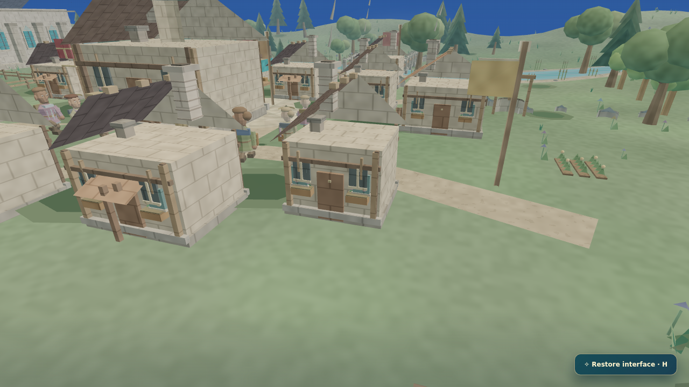
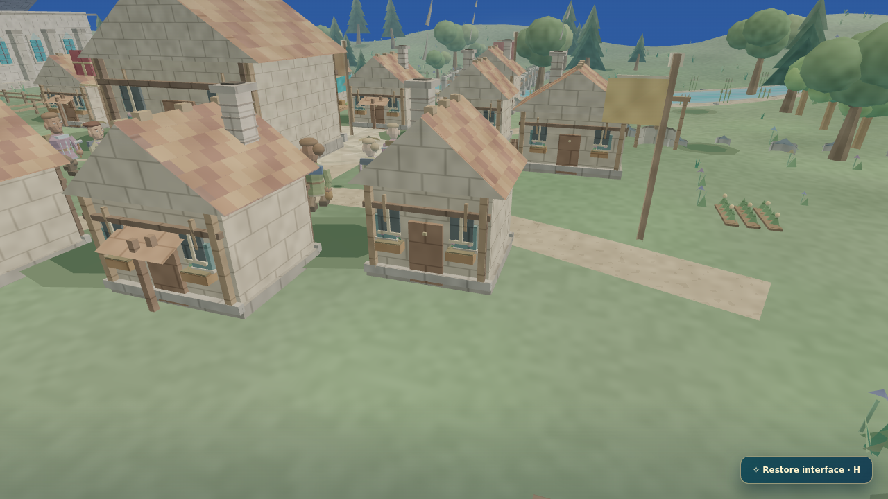

GAME 5 · RECOVERABLE CHECKPOINT · 30 OCTOBER 2026
A village that actually works.
Pagonia benchmark: NOT PASSEDOpen game · Previous journal · Fixed commercial reference
The newer local Pagonia-upgrade workspace was not recovered. This separate branch starts from the saved GitHub checkpoint; it does not overwrite or claim to include the inaccessible newer work.
Actual output, before and after
Renderer unverified until the capture manifest loads. No hardware-performance or commercial-quality claim.


This is our own before/after comparison, not a blind A/B against Pagonia. The downloaded WebGL frames were inspected: missing roof halves and gables are corrected. Software WebGL is not hardware-GPU performance proof.
Implemented
Arrival starts a genuine stationary work interval. Travel cannot earn a work reward, and failed routes cannot grant rewards at the accidental waiting position. Six professions have equipment attached to actual animated wrists; resting and waiting feet are planted. Cottage gables and ceramic roof surfaces face outward. Boot soles are lowered to their terrain contact height.
Verified results
11 new focused checks and all 54 existing Tiny Kingdom browser tests passed. The TypeScript build and stream-server self-test passed. At day 91, the accelerated simulation had 27 citizens, 24 buildings, 394.59 food, 21.2 timber, 555.2 gold and 24 citizens with friendships; all citizen positions were walkable.
The simulation algorithm is now seeded-work-v2. Valid legacy saves deliberately reset travel-derived work timers; new saves preserve in-progress work and replay identically.
Full catalogue verification is incomplete. The GitHub diagnostic timed out with exit 124 after 478 passing test records, without a final summary. The workflow allows this diagnostic failure, so its overall green status does not mean every catalogue test passed. Dependency installation also reported two high-severity vulnerabilities requiring separate assessment.
Critic verdict: still open
Self-review identifies repetitive cottage shapes, flat lighting/material response, sparse district landscaping and a close citizen camera obscured by buildings. Unobstructed close-ups and continuous work recordings are needed before judging animation quality. Local software-projection fallback frames also show depth-sorting artifacts.
No independent fresh-context critic, blind reference win or Ultracode run is claimed. This was inline implementation and self-review because the worker tunnel was disconnected. Characters, cargo routines and hardware performance remain unfinished against the requested goal.
After manifest · Before manifest · Full review and remaining gates
This checkpoint is not production-ready. The Gauntlet remains open.